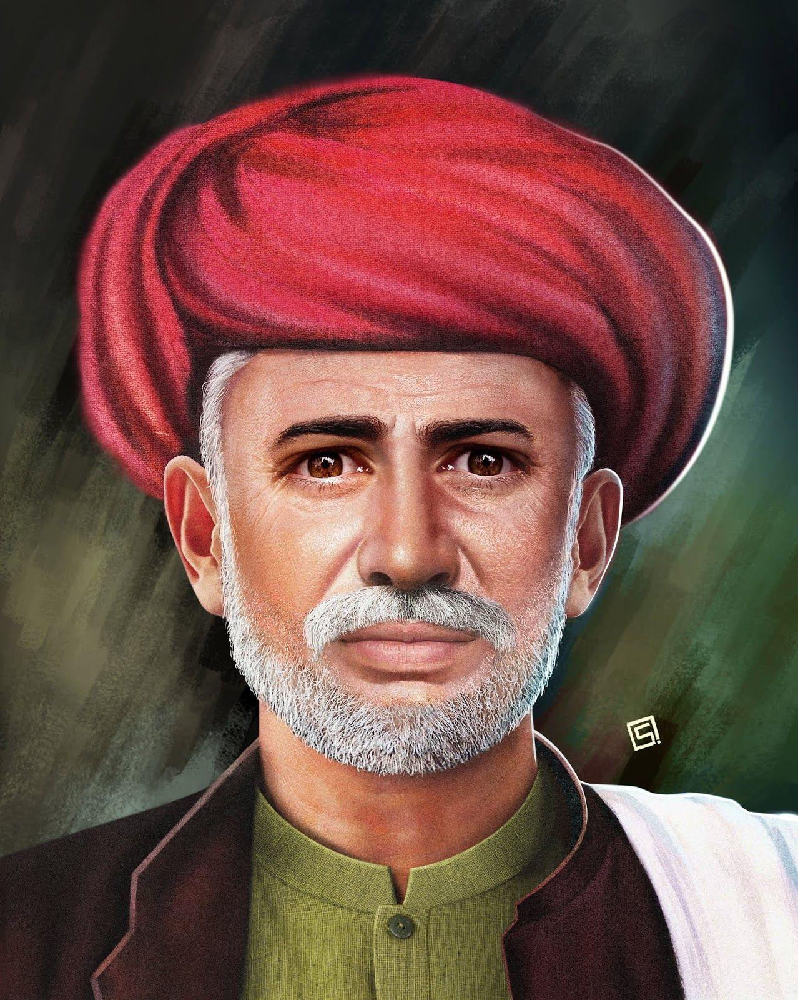

The Father of women Education
Jyotirao Govindrao Phule(11 April 1827 – 28 November 1890) was an Indian social activist, businessman, anti-caste social reformer and writer from Maharashtra.His work extended to many fields, including eradication of untouchability and the caste system and for his efforts in educating women and oppressed caste people. He and his wife, Savitribai Phule, were pioneers of women's education in India. Phule started his first school for girls in 1848 in Pune at Tatyasaheb Bhide's residence or Bhidewada.He, along with his followers, formed the Satyashodhak Samaj (Society of Truth Seekers) to attain equal rights for people from lower castes. People from all religions and castes could become a part of this association which worked for the upliftment of the oppressed classes. Phule is regarded as an important figure in the social reform movement in Maharashtra.The honorific Mahātmā (Sanskrit: "great-souled", "venerable"), was first applied to him in 1888 at a special program honoring him in Mumbai.
Social activism
Education
Mahatma Phule Wada, Pune. This is the place where Phule stayed with his wife Savitribai Phule for a certain period in his life. It was built in around 1852. In 1848, aged 21, Phule visited a girls' school in Ahmednagar run by Christian missionary Cynthia Farrar.It was also in 1848 that he read Thomas Paine's book Rights of Man and developed a keen sense of social justice. He realized that exploited castes and women were at a disadvantage in Indian society, and also that education of these sections was vital to their emancipation.To this end and in the same year, Phule first taught reading and writing to his wife, Savitribai, and then the couple started the first indigenously run school for girls in Pune.He also taught his sister Sagunabai Kshirsagar (his maternal aunt's daughter) to write Marathi with Savitribai.The conservative upper caste society of Pune didn't approve of his work. But many Indians and Europeans helped him generously. Conservatives in Pune also forced his own family and community to ostracize them. During this period, their friend Usman Sheikh and his sister Fatima Sheikh provided them with shelter. They also helped to start the school on their premises.Later, the Phules started schools for children from the then untouchable castes such as Mahar and Mang.In 1852, there were three Phule schools in operation 273 girls were pursuing education in these school but by 1858 they had all closed. Eleanor Zelliot blames the closure on private European donations drying up due to the Indian Mutiny of 1857, withdrawal of government support, and Jyotirao resigning from the school management committee because of disagreement regarding the curriculum.Women's welfare
Phule watched how untouchables were not permitted to pollute anyone with their shadows and that they had to attach a broom to their backs to wipe the path on which they had traveled. He saw how untouchable women had been forced to dance naked.[citation needed] He saw young widows shaving their heads, refraining from any sort of joy in their life. He made the decision to educate women by witnessing all these social evils that encouraged unequality. He began with his wife, every afternoon, Jyotirao sat with his wife Savitribai Phule and educated her when she went to the farms where he worked, to bring him his meal. He sent his wife to get trained at a school. The husband and wife set up India's first girls' school in Vishrambag Wada, Pune, in 1848. He championed widow remarriage and started a home for dominant caste pregnant widows to give birth in a safe and secure place in 1863.His orphanage was established in an attempt to reduce the rate of infanticide. In 1863, Pune witnessed a horrific incident. A Brahmin widow named Kashibai got pregnant and her attempts at abortion didn't succeed. She killed the baby after giving it birth and threw it in a well, but her act came to light. She had to face punishment and was sentenced to jail. This incident greatly upset Phule and hence, along with his longtime friend Sadashiv Ballal Govande and Savitribai, he started an infanticide prevention centre. Pamphlets were stuck around Pune advertising the centre in the following words: "Widows, come here and deliver your baby safely and secretly. It is up to your discretion whether you want to keep the baby in the centre or take it with you. This orphanage will take care of the children [left behind]." The Phule couple ran the infanticide prevention centre until the mid-1880s. Phule tried to eliminate the stigma of social untouchability surrounding the exploited castes by opening his house and the use of his water well to the members of the exploited castes.Views on religion and caste
Phule appealed for restablishment of the reign of mythical Mahabali (King Bali) which predated "Aryans' treacherous coup d'etat".He proposed his own version of Aryan invasion theory that the Aryan conquerors of India, whom the theory's proponents considered to be racially superior, were in fact barbaric suppressors of the indigenous people. He believed that they had instituted the caste system as a framework for subjugation and social division that ensured the pre-eminence of their Brahmin successors. He saw the subsequent Muslim conquests of the Indian subcontinent as more of the same sort of thing, being a repressive alien regime, but took heart in the arrival of the British, whom he considered to be relatively enlightened and not supportive of the varnashramadharma system instigated and then perpetuated by those previous invaders.In his book, Gulamgiri, he thanked Christian missionaries and the British colonists for making the exploited castes realise that they are worthy of all human rights.The book, whose title transliterates as slavery and which concerned women, caste and reform, was dedicated to the people in the US who were working to end slavery. Phule saw Vishnu's avatars as a symbol of oppression stemming from the Aryan conquests and took Mahabali (Bali Raja) as hero.His critique of the caste system began with an attack on the Vedas, the most fundamental texts of Hindus.He considered them to be a form of false consciousness. He is credited with introducing the Marathi word dalit (broken, crushed) as a descriptor for those people who were outside the traditional varna system. At an education commission hearing in 1882, Phule called for help in providing education for lower castes. To implement it, he advocated making primary education compulsory in villages. He also asked for special incentives to get more lower-caste people in high schools and colleges.Satyashodhak Samaj
On 24 September 1874, Phule formed Satyashodhak Samaj to focus on rights of depressed groups such women, the Shudra, and the Dalit.Through this samaj, he opposed idolatry and denounced the caste system. Satyashodhak Samaj campaigned for the spread of rational thinking and rejected the need for priests. Phule established Satyashodhak Samaj with the ideals of human well-being, happiness, unity, equality, and easy religious principles and rituals.[46] A Pune-based newspaper, Deenbandhu, provided the voice for the views of the Samaj. The membership of the samaj included Muslims, Brahmins and government officials. Phule's own Mali caste provided the leading members and financial supporters for the organization.Public Works
- Gulamgiri, 1873
- Tritiya Ratna, 1855
- Powada : Chatrapati Shivajiraje Bhosle Yancha, [English: Life Of Shivaji, In Poetical Metre], June 1869
- Satsar Ank 1, June 1885
- Asprushyanchi Kaifiyat.
- Satsar Ank 2 June 1885.
- Ishara, October 1885.
- Gramjoshya sambhandi jahir kabhar, (1886).
- Satyashodhak Samajokt Mangalashtakasah Sarva Puja-vidhi, 1887
- Sarvajanik Satya Dharma Poostak, April 1889
- Sarvajanic Satya Dharmapustak, 1891
- Akhandadi Kavyarachana
Read more about Mahatma Jyotirav Phule...Wikipedia.